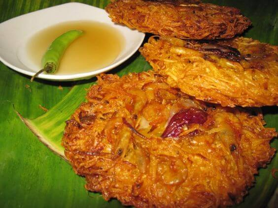
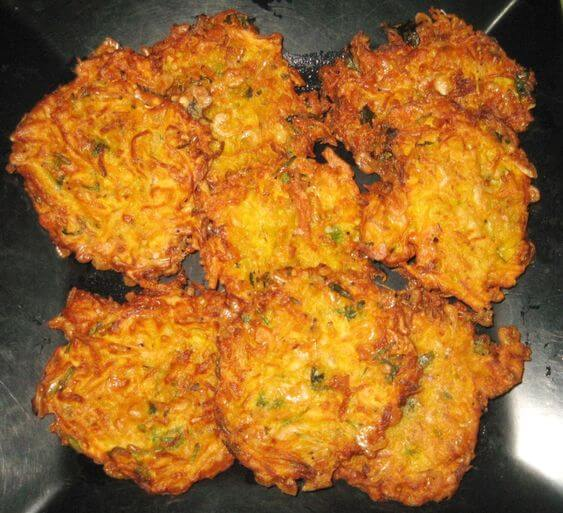
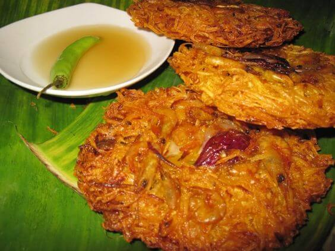
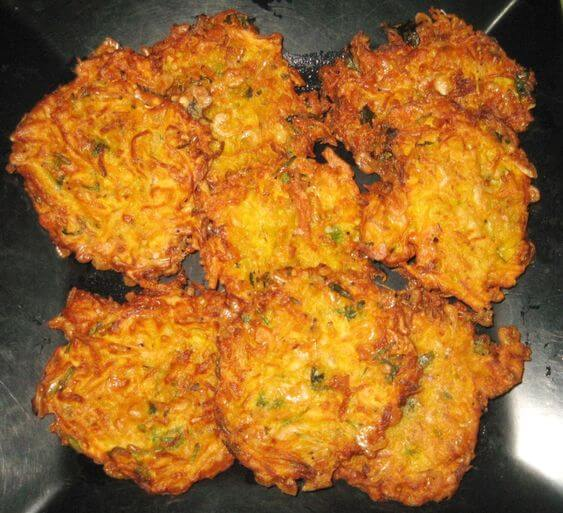

Ang Okoy ay isa sa mga paboritong lutuin ng mga Pilipino na kilala sa kanyang malasang lasa at nakakaganyak na
crunch. Ito ay isang pagkaing nagpapakita ng kahusayan at kahalagahan ng kultura ng Pilipinas.
Ang salitang "Okoy" ay nagmula sa salitang Bisaya na nangangahulugang "atay" o "utak." Ito ay isang uri ng
tortang ginagawa sa pamamagitan ng paghahalo ng binatog na mais o kalabasa, hipon, harina, at iba pang mga
sangkap. Ang haloang ito ay inilalagay sa mainit na kawali at prituhin hanggang sa maging malutong at ginto
ang kulay. Karaniwang kasama rin sa Okoy ang bawang, sibuyas, at iba pang mga pampalasa upang mapalalim ang
lasa.
Ang Okoy ay hindi lamang isang simpleng putahe; ito ay isang pagpapahayag ng galing at pagkamalikhain ng mga
Pilipino sa pagluluto. Ito ay nagpapakita ng kasanayan ng mga Pinoy sa paggamit ng mga lokal na sangkap at
angkop na pamamaraan ng pagluluto. Ang Okoy ay naglalarawan ng pagsasama-sama ng malalasang lasa at
natatanging tekstura na nagpapahayag ng kahalagahan ng ating kultura.
Ang paghahanda ng Okoy ay hindi lamang tungkol sa lasa nito, kundi pati na rin sa pagsasama-sama at
pagpapahalaga sa mga tradisyon ng mga Pilipino. Ito ay karaniwang inihahanda sa mga espesyal na pagkakataon at
handaan bilang isang masarap na pulutan o ulam. Sa bawat paghahain ng Okoy, nabubuo ang mga masayang alaala at
samahan na nagpapalakas ng pagkakaisa at pagmamahalan ng mga Pilipino.
Ang Okoy ay naglalaman ng yaman ng lokal na mga sangkap sa Pilipinas. Mula sa sariwang binatog na mais o
kalabasa, hanggang sa mga hipon na nagpapahayag ng yaman ng ating karagatan, ito ay nagpapahayag ng
pagpapahalaga ng mga Pilipino sa kanilang sariling mga produkto at likas na yaman.
Sa huli, ang Okoy ay hindi lamang isang pagkaing pinapakain sa atin, ito ay isang simbolo ng kasiglahan,
kasarapan, at pagkakaisa ng mga Pilipino. Ito ay nagpapaalala sa atin na ang pagkain ay hindi lamang tungkol
sa sustansya, kundi pati na rin sa pagsasama-sama ng kultura, pagpapahalaga sa tradisyon, at kasiyahan ng
pagkakasama-sama ng mga Pilipino.
Okoy: Ang Malasa at Kn Crunchy na Lutong-Pinoy
 


